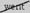
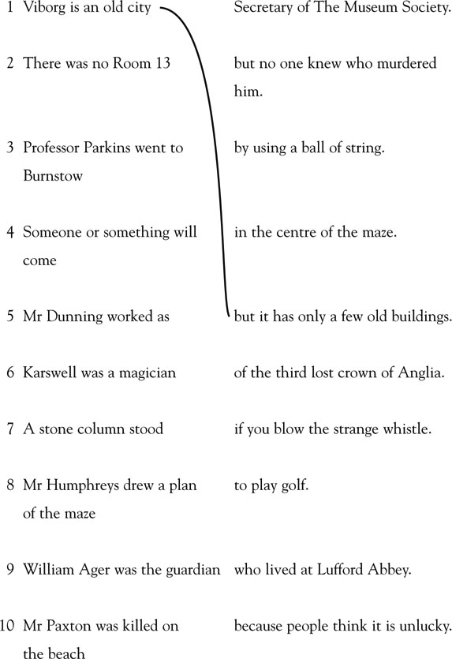
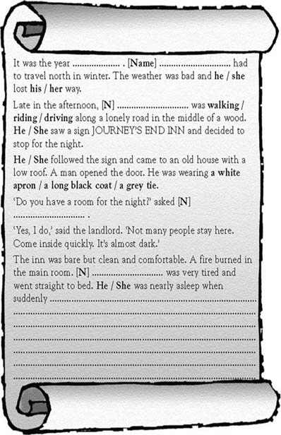

Listen to Part 1:
Tóm lược câu chuyện
Điền vào chỗ trống. Sử dụng mỗi từ trong hộp một lần.
Lion 13 Vi ở 1726 đi nhỏ hơn Francken
lịch sử xuất hiện cũ là không ở số 
giấy biết pháp sư lạ quyển vở gần người
Nhà trọ lửa ở lại buổi sáng và đọc là
Ông Anderson 1 đi đến Viborg 2............................. vào năm 1891. Ông 3.................................................. ở phòng 4................................................ 12 tại 5........................... Golden Lion 6.................................. . Không có phòng số 7................. vì nhiều 9................................. nghĩ rằng đó 10.................. là một con số không may. Golden 11.......................... Inn đã 12......................... 350 năm 13......................... . Ông Anderson 14............................... đang viết một 15........................................ về 16................................................. của Đan Mạch. Ông 17....................................... về một 18................................................. tên là Nicolas 19............................................................... . Francken biến mất 20.................................. không ai 21................................................. biết ông 22.......................................... ở đâu. Một 23........................................... lớn đã thiêu rụi nhiều 24....................................... và hồ sơ ở 25.................................. . 26....................................... những điều kỳ lạ đã xảy ra trong khi ông Anderson đang 27................................... tại The Golden Lion Inn. Vào ban đêm, phòng của ông 28..................................., và phòng số 1329...................................... . Nhưng đến 30.......................................... thì nó lại biến mất.
Tóm lược câu chuyện
Điền vào chỗ trống. Sử dụng mỗi từ trong hộp một lần.
người đàn ông học của ông ở là để Thượng tá nhà thờ
của phòng tại cùng ở lại tiếng còi và cũ có vào
trông hai 1902 trò chơi Inn thăm cùng nhau
Giáo sư Parkins 1........................... Burnstow vào 2.................................. . Ông đi 3............................... chơi gôn 4........................................ để xem 5.................................. một nhà thờ 6.................................................. . Giáo sư Parkins 7................................... nhà khảo cổ học. Ông 8............................... lịch sử và 9................................... tòa nhà.
The Globe 10........................................ chỉ có 11.................................... phòng. Mỗi phòng 12...................................... hai giường. Giáo sư Parkins 13.............................................. ở một 14 .............................................. và 15................................... Wilson ở 16................................... phòng còn lại.
Listen to Part 2:
Hai 17...................................... chơi gôn 18...................................... .
Sau 19..............................., Giáo sư Parkins 20............................... đi đến nhà thờ cổ. Ông tìm thấy 21.............................. mảnh 22................................... kim loại nhỏ và 23...................................... nó vào 24........................................ túi áo.
Sau đó, khi nhìn vào mảnh kim loại, ông thấy đó là một 25.................................. . Có những chữ La Mã trên chiếc còi. Giáo sư thổi còi, và đột nhiên một cơn gió mạnh thổi qua nhà trọ.
Đêm đó, Giáo sư nằm mơ thấy ác mộng. Ông không đơn độc trong phòng mình. Một người nào đó ngủ trên chiếc giường thứ hai.
Chọn động từ
Điền vào chỗ trống động từ chính xác ở dạng chia đúng từ trong ngoặc.
Ông Karswell 1 (gửi / gửi / đang gửi) .............................. một cuốn sách đến Hội Bảo tàng năm 1900. Ông Dunning, Thư ký Hội Bảo tàng, 2 (hoàn thành / đã hoàn thành / đang hoàn thành) .............................. 3 (đọc / đang đọc / đã đọc) .............................. cuốn sách nhưng không 4 (thích / thích / đang thích) .............................. nó. Ông 5 (viết / đã viết / đang viết) .............................. một bức thư gửi cho ông Karswell 6 (nói / đã nói / đang nói) .............................. rằng Hội Bảo tàng 7 (là / đã / đã là) .............................. không quan tâm đến cuốn sách. Bức thư 8 (làm / đã làm / đang làm) .............................. ông Karswell rất tức giận.
Chọn động từ
Điền vào chỗ trống động từ chính xác ở dạng chia đúng từ trong ngoặc.
Listen to Part 3:
Quản lý bất động sản, ông Cooper, 1 (nói / đã nói / đang nói) .............................. ông Humphreys, "Ông nội của ông Wilson 2 (xây / xây / đã xây) .............................. một mê cung trong vườn. Nhưng chú của anh 3 (lấy / lấy / đã lấy) .............................. những viên đá ra khỏi mê cung hai mươi năm trước. Sau đó, cánh cổng vào mê cung 4 (khóa / khóa / đã khóa) .............................. . Từ đó không có ai 5 (ở / đã ở / đang ở) .............................. ở trong đó nữa."
Bà Wardrop nói, "Anh 6 (đã tìm ra / tìm ra / đang tìm ra) .............................. lối vào trung tâm mê cung bằng cách 7 (đi theo / đã đi theo / đang đi theo) .............................. những chữ cái 8 (viết / đã viết / đang viết) .............................. trên những khối đá này."
Viết câu hỏi cho câu trả lời.
1 Ông Humphreys đã vẽ gì?
Ông Humphreys vẽ bản đồ của mê cung.
2 Cái gì
Một từ khác cho bản đồ là sơ đồ.
3 Khi nào
Listen to Part 4:
Mê cung được xây dựng vào những năm 1780.
4 Cái gì
Ông Humphreys tìm thấy một cột đá ở trung tâm của mê cung.
5 Cái gì
Một quả cầu kim loại nằm trên đỉnh cột.
6 Tại sao
Bà Wardrop muốn có sơ đồ mê cung vì bà đang viết một cuốn sách.
Đúng hay Sai?
Đọc các câu. Sau đó, viết Đ (Đúng), S (Sai) hoặc ? (Không biết) bên cạnh các phát biểu bên dưới.
1 Seaburgh là một thị trấn nhỏ ở bờ biển phía đông nước Anh.
Listen to Part 5:
a Bên biển.
b Nằm ở phía tây nước Anh.
c Rất đông người sống ở đó.
d Thời tiết lạnh và ẩm ướt.
2 William Ager mất ngày 21 tháng 12 năm 1918 ở tuổi 28.
a William Ager đã chết.
b Ông có thể sinh năm 1890.
c Ông chết vì tuổi già.
d Ông có vợ và hai con trai.
3 Vương miện được làm bằng bạc: là vòng kim loại có gắn bốn viên ngọc.
Listen to Part 6:
a Vương miện có đá quý.
b Vương miện có hình tròn.
c Vương miện có thể có giá trị vì bạc và ngọc là những thứ quý.
d Những viên ngọc là kim cương.
4 Ban đầu có ba vương miện nhưng hai vương miện đã biến mất không dấu vết.
a Chúng ta biết địa điểm của cả ba chiếc vương miện.
b Đã từng có ba vương miện.
c Ba chiếc vương miện hoàn toàn giống nhau.
d Chúng ta không biết vị trí của hai vương miện.
5 Nhiệm vụ của William Ager là bảo vệ vương miện và giữ bí mật và an toàn.
Listen to Part 7:
a William Ager là người giám hộ của vương miện.
b William Ager phải nói cho mọi người biết về vương miện.
c William Ager phải trông coi vương miện.
d William Ager giết bất cứ ai tìm thấy vương miện.
6 'Chúng tôi nghe thấy một tiếng cười kỳ lạ trong sương mù. Đó không phải là tiếng cười của một người còn sống. '
a Đó không phải là một buổi sáng tươi sáng.
b Người kể chuyện và người bạn của anh ta nghĩ rằng họ nghe thấy tiếng cười của một con ma.
c Không có gì bất thường về tiếng cười.
d Người kể chuyện và người bạn của anh không thể nhìn thấy ai cười.
Tạo câu 1
Listen to Part 8:
Viết câu hỏi cho câu trả lời.
1 Viborg ở đâu?
Viborg nằm ở Đan Mạch.
2 Cái gì
Tên nhà trọ ở Burnstow là The Globe.
2 Ai
Karswell ngã từ một tòa tháp nhà thờ ở Pháp.
2 Ai
Bà Wardrop muốn xem mê cung.
Listen to Part 9:
2 Khi nào
William Ager mất ngày 21 tháng 12 năm 1918.
Ghép nối hai phần của mỗi câu.

Ghép các chữ cái thành từ vựng từ các câu chuyện. Nghĩa của từ được đưa ra để giúp bạn.
1 radclean
Nghĩa: danh sách các ngày, tuần và tháng của một năm
Listen to Part 10:
lịch
2 ginamica
Nghĩa: người được cho là có những sức mạnh kỳ lạ
....................................
3 arblyir
Nghĩa: phòng hoặc tòa nhà nơi bạn đến để đọc hoặc mượn sách
....................................
4 roofpress
Nghĩa: giáo viên quan trọng tại một trường đại học
....................................
Listen to Part 11:
5 suemum
Nghĩa: tòa nhà nơi mọi người có thể xem những thứ cũ hoặc thú vị
....................................
6 elocoln
Nghĩa: sĩ quan trong quân đội có cấp bậc cao
....................................
7 sarapiped
Nghĩa: ra đi để không còn nhìn thấy
....................................
8 neonness
Listen to Part 12:
Nghĩa: từ ngữ hoặc ý tưởng vô nghĩa hoặc không đúng sự thật
....................................
Viết một câu chuyện ma ngắn. Điền vào chỗ trống và khoanh tròn những từ đúng. Sau đó, sử dụng các ghi chú để hoàn thành câu chuyện.

|
Anh ta/cô ta nhìn/nghe/cảm thấy thấy gì? |
tiếng hét to / cơn gió mạnh / bóng đen / đèn đỏ / tiếng thì thầm lạ… |
|
Anh ta/cô ta đã làm gì tiếp theo? |
bật đèn / thắp nến / ra khỏi giường / chạy/trườn đến cửa sổ / chạy/trườn xuống lầu / hét / kêu cứu … |
|
Anh ta/cô ta có nhìn thấy ai/cái gì không? Mô tả họ/nó. |
Listen to Part 13: hình bóng đen tối / ông già nhăn nheo / sinh vật lạ… |
|
Chuyện gì xảy ra tiếp theo? |
hình bóng biến mất / cửa sổ/cửa đóng sầm lại / sinh vật chạy ra khỏi phòng của anh ấy/cô ấy / hướng về phía anh ấy/cô ấy / chủ nhà chạy vào phòng … |
|
Câu chuyện kết thúc như thế nào? |
|
|
Các từ dùng trong câu chuyện: |
tiếp theo / đột nhiên / ngay lập tức / ngay lập tức / từ từ / nhanh chóng / sáng hôm sau |